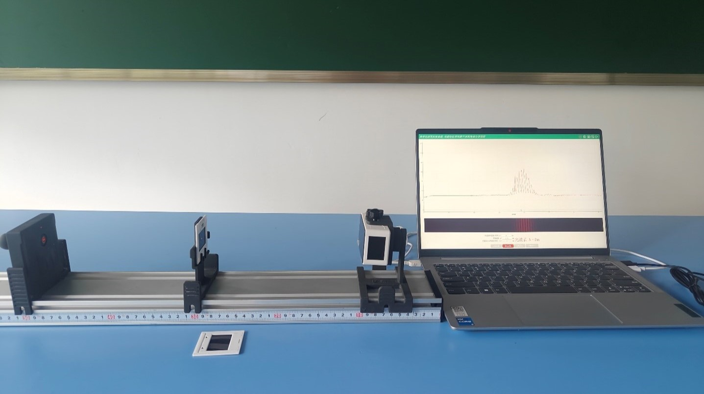
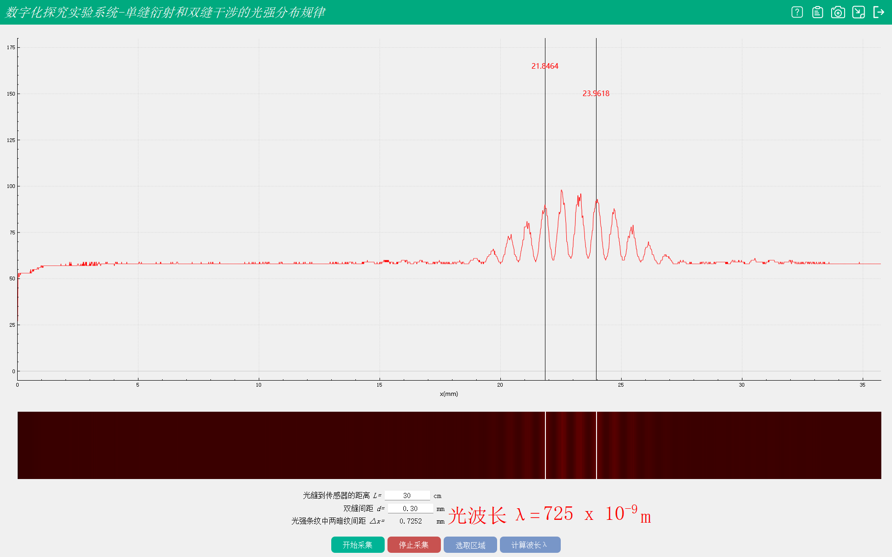
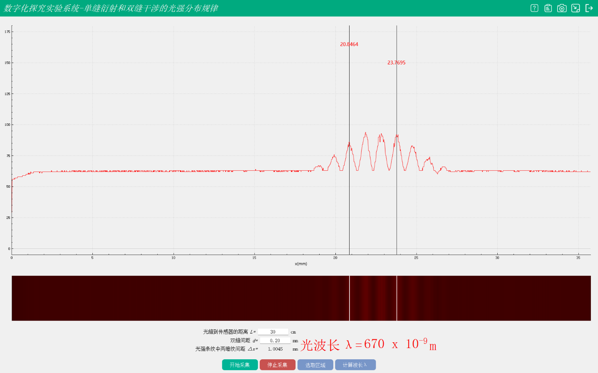
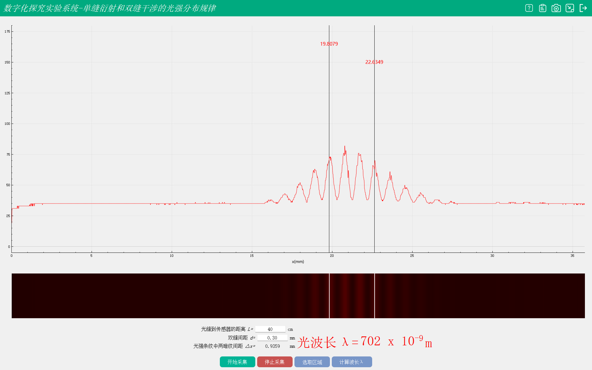

实验四十三 用双缝干涉实验测量光的波长
【实验目的】
学会双缝干涉实验测量光的波长的方法。
【实验原理】
实验开始于一个光源，它可以是单色光，比如激光，以确保实验的准确性。光源发出的光照射在两个相隔很近的狭缝上。这两个狭缝充当了光波的两个次波源。从两个狭缝发出的光波在空间中传播并相互重叠。当两个波峰相遇时，它们会相互加强，形成亮点（构造性干涉）。当波峰与波谷相遇时，它们会相互抵消，形成暗点（破坏性干涉）。干涉后的光波最终到达一个屏幕，屏幕上的观察者可以看到明暗相间的条纹图案，这些条纹就是干涉图样。通过测量屏幕上相邻两点（或暗点）之间的距离，并利用干涉公式，可以计算出光的波长。干涉条纹的间距与光的波长、狭缝间距以及狭缝到屏幕的距离有关。公式：干涉条纹的间距 𝑑d 可以用以下公式计算： 𝑑=𝜆𝐿𝑏d=bλL 其中，𝜆λ 是光的波长，𝐿L 是屏幕与狭缝之间的距离，𝑏b 是两个狭缝中心之间的距离。
【实验器材】
数据采集器、光学系统、导轨、计算机等。
【实验装置】

【实验操作步骤】
1.按实验装置图将实验器材搭建好。
2.将光缝座与相对光照度传感器之间的距离设置为30cm
3.用数据线把相对光照度传感器与计算机相连
4.打开计算机中的单双缝的光强分布专用软件
5.打开激光光源，调整激光光源，使激光穿过双缝干涉照射到相对光照度传感器的测量位置
6.在软件上设置光缝到传感器的距离L=30，双缝间距d=0.30mm，选择区域并计算波长
7.调整L和d的值，重复实验计算观察，得出实验结论。

L=30cm

L=30cm 双缝察隅0.20mm

L=400cm